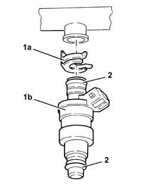
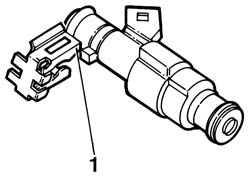

1056B68 set of injectors - r + r with fuel manifold pipe removed - includes seal replacement
- Path
- Procedures > 10 ENGINE > 1056 PETROL INJECTION SYSTEM > 1056B multi-point injection system (mpi) > 1056B68 set of injectors - r + r with fuel manifold pipe removed - includes seal replacement
- Kind
- repair procedure (removal / refitting; the operation number is the code)
- Applies to
- engines: 1.6 TS , 1.8 TS, 2.5 V6, 3.2 V6; all production periods
- Interactive page
- https://sloeber94.github.io/elrnDB-a156/en/#/3237541
Applies to: engines: 2.5 V6, 3.2 V6; all production periods
 Removing
Removing
 Refitting
Refitting1. Remove the retainers (1a) and remove the fuel injectors (1b) from the fuel manifold pipe.
2. Remove the O-rings from the fuel injectors.

Applies to: engines: 2.5 V6, 3.2 V6; all production periods
Refitting
RemovingFit new O-rings on the fuel injectors.
Fit the fuel injectors on the fuel manifold pipe and fix them using the safety clips.
Applies to: engines: 1.6 TS , 1.8 TS; all production periods
Removing
Refitting1. Remove the press fit clip on the injectors and separate them from the single fuel manifold pipe.

Applies to: engines: 1.6 TS , 1.8 TS; all production periods
Refitting
RemovingFit the injector in the housing on the single fuel manifold pipe, fit the press fit clip and repeat the operation for the other injectors.